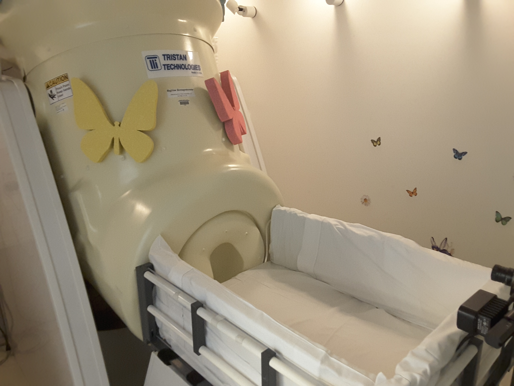

<!--
@license
Copyright (c) 2016 The Polymer Project Authors. All rights reserved.
This code may only be used under the BSD style license found at http://polymer.github.io/LICENSE.txt
The complete set of authors may be found at http://polymer.github.io/AUTHORS.txt
The complete set of contributors may be found at http://polymer.github.io/CONTRIBUTORS.txt
Code distributed by Google as part of the polymer project is also
subject to an additional IP rights grant found at http://polymer.github.io/PATENTS.txt
-->

<link rel="import" href="../../bower_components/polymer/polymer.html">

<link rel="import" href="../common-element/footer-element.html">
<link rel="import" href="../common-element/toc-behavior.html">
<link rel="import" href="../common-element/member-card-element.html">

<link rel="import" href="../common-element/common-styles.html">

<dom-module id="mri-whatismri">
  <template>
    <style include="common-styles"></style>
    <style>
      :host {
        display: block;
      }


    </style>

    <article>
      <header class="center">
        <h1>What is MRI?</h1>
      </header>


      <main>

<section id="recordings" class="center">

          <div class="imageContainer maxflow">
            <div>
              
            </div>
          </div>
          <div class="imageContainer maxflow">
            <div align="justify">

              <p>MRI (Magnetic Resonance Imaging) is a non-invasive imaging technique that uses a large magnet,
                radio waves, and a computer to produce 2- and 3- dimensional images of the body. MRI is often the
                imaging modality of choice because it does not use ionizing radiation such as x-rays, and there are
                no known long-term harmful effects.</p>

        </section>

        <section id="hardware" class="center">
          <h2>What is an MRI scanner and how does it work?</h2>
          <div class="imageContainer maxflow">
            <div>
              
            </div>
          </div>
          <div class="imageContainer maxflow">
            <div align="justify">

                      <p>The MRI scanner is a large, tube-shaped magnet that provides a strong magnetic field around
                        your child. A radio-frequency coil is placed over the body part to be imaged, which will be the
                        brain for the purposes of our studies. The magnetic field, along with the applied radio-frequency
                        waves, will temporarily alter the alignment of hydrogen protons found in water molecules within
                        the body. Computers then construct the images of the brain based on the radio-frequency signals
                        emitted by the protons.</p>

                </section>

                <section id="hardware" class="center">
                  <h2>How should I prepare my child for the MRI scan?</h2>
                  <div class="imageContainer maxflow">
                    <div>
                      
                    </div>
                  </div>
                  <div class="imageContainer maxflow">
                    <div align="justify">

                              <p>Preparation for the MRI scan will depend on the age of your child. However, the following
                                are some general guidelines that our lab has found to increase the success rate for MRI scans
                                 in infants and toddlers:</p>

                <ul style="list-style-type:square">
                                <li>Try to ensure your child is asleep on his/her back during the nights leading up to 	the scan.</li>
                                <li>Bathe your child immediately prior to the appointment.</li>
                                <li>Bring a favorite book, toy, blanket, or stuffed animal to the appointment in 	order to create a more familiar environment.</li>
                                <li>Bring a bedtime snack if this is part of your child’s normal routine.</li>
                                <li>Do not let your child nap in the car on the way to the appointment.</li>
                                <li>Try to keep your child awake throughout the day of the scan (skip nap time if possible) so that he/she arrives to the hospital sleepy.</li>
                                <li>Place earbuds in his/her ears when falling asleep during nights leading up to the scan (if they are provided by the researcher prior to the appointment).</li>
                                <li>Arrive with your child already changed into the hospital scrubs (if they are 	provided by the researcher prior to the appointment).</p>
                              </ul>

                        </section>

        <section id="hardware" class="center">
          <h2>What should I expect when I bring my child in for the MRI?</h2>
          <div class="imageContainer maxflow">
            <div>
              
            </div>
          </div>
          <div class="imageContainer maxflow">
            <div align="justify">
              <p>For our research scans, your child will not be exposed to any form of contrast or sedation.
                This means that we do not inject anything into him/her and we will not be forcing him/her to fall asleep.
                Your child will be naturally asleep during the MRI scan. They will wear medical grade ear protection
                in order to protect their hearing and to keep them from waking up during the scan. Due to the strong
                magnetic field present inside the MRI, your child will need to be metal-free and change into hospital
                scrubs. If you decide to enter the scanner room with your child, you will also need to remove all metal
                objects and change into hospital scrubs. Only one parent is permitted to enter the MRI room with the child,
                per hospital regulation.</p>
            </div>

        </section>

        <section id="recordings" class="center">
          <h2>What happens during the MRI scan?</h2>
          <div class="imageContainer maxflow">
            <div>
              
            </div>
          </div>
          <div class="imageContainer maxflow">
            <div align="justify">
              <p>The first hour of the appointment will be used to make your child as comfortable as possible so that
                they are able to fall asleep. Once asleep, your child will be transferred from the patient preparation
                room into the MRI scanner room. They will be placed onto the MRI bed on their back, proper hearing protection
                 will be put in place, along with the head coil. Metal-free blankets and cushions will be used to ensure
                 your child is comfortable and safe. A research assistant will be present at all times during the scan to
                 ensure your child’s safety. Our research scans may last anywhere from 25-60 minutes depending on the specific
                  project. If your child wakes up or becomes uncomfortable at any point during the scan, they will be removed
                   immediately from the scanner. If he/she is able to go back to sleep, we will resume the scan with your
                   permission.</p>
            </div>
          </div>
        </section>

      </main>

      <footer-element></footer-element>

    </article>

  </template>

  <script>
    Polymer({
      is: 'mri-whatismri',
      behaviors: [TOCBehavior],
    });
  </script>
</dom-module>


        <section>
          <div class="imageContainer maxflow">
            <div align="justify">
              <h3>What are MRI's</h3>
              <p>This first video shows the basics and the procedure for children going through an MRI. The video was was created by Boston Children’s Hospital. </p>
              <p>https://www.youtube.com/watch?v=5wWVihGpcjk</p>
              <p> This second video is also talking about MRI’s but specifically to a research project that was conducted by Nadine Gaab. The research focused on children who were diagnosed or at risk for developmental disorders narrowing in on language-based learning disabilities. This video is helpful for showing a specific way that MRI was used at Boston Children’s Hospital. </p>
              <p>https://www.youtube.com/watch?v=Y1XbOjGALfo<p>
            </div>
          </div>
        </section>

        <section>
          <div class="imageContainer maxflow">
            <div align="justify">
              <h3>Click here to experience MRI sounds to prepare you for your visit!</h3>
              <p>/Multimedia/WholeBrainScan.mp3</p>
              <p>https://www.youtube.com/watch?v=6Aj2QspPf7s</p>
            </div>
          </div>
        </section>

        <section>
          <h2 id="about" class="maxflow" class="maxflow">About</h2>

          <p>MRI is....</p>

        </section>

      </main>

      <footer-element></footer-element>

    </article>

  </template>

  <script>
    Polymer({
      is: 'mri-whatismri',
      behaviors: [TOCBehavior],
    });
  </script>
</dom-module>
